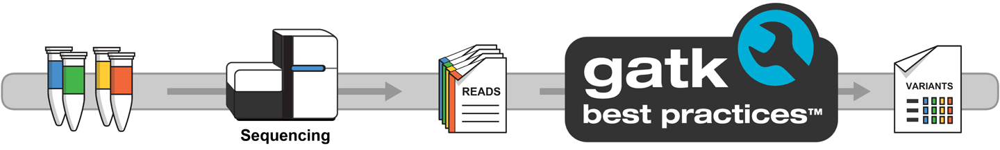

Part 1: Per-sample variant calling¶
In the first part of this course, we show you how to build a simple variant calling pipeline that applies GATK variant calling to individual sequencing samples.
Method overview¶
Variant calling is a genomic analysis method that aims to identify variations in a genome sequence relative to a reference genome. Here we are going to use tools and methods designed for calling short variants, i.e. SNPs and indels.

A full variant calling pipeline typically involves a lot of steps, including mapping to the reference (sometime referred to as genome alignment) and variant filtering and prioritization. For simplicity, in this part of the course we are going to focus on just the variant calling part.
Dataset¶
We provide the following data and related resources:
- A reference genome consisting of a small region of the human chromosome 20 (from hg19/b37) and its accessory files (index and sequence dictionary).
- Three whole genome sequencing samples corresponding to a family trio (mother, father and son), which have been subset to a small slice of data on chromosome 20 to keep the file sizes small. This is Illumina short-read sequencing data that have already been mapped to the reference genome, provided in BAM format (Binary Alignment Map, a compressed version of SAM, Sequence Alignment Map).
- A list of genomic intervals, i.e. coordinates on the genome where our samples have data suitable for calling variants, provided in BED format.
Workflow¶
In this part of the course, we're going to develop a workflow that does the following:
- Generate an index file for each BAM input file using Samtools
- Run the GATK HaplotypeCaller on each BAM input file to generate per-sample variant calls in VCF (Variant Call Format)
Note
Index files are a common feature of bioinformatics file formats; they contain information about the structure of the main file that allows tools like GATK to access a subset of the data without having to read through the whole file. This is important because of how big these files can get.
0. Warmup: Test the Samtools and GATK commands interactively¶
First we want to try out the commands manually before we attempt to wrap them in a workflow. The tools we need (Samtools and GATK) are not installed in the GitHub Codespaces environment, so we'll use them via containers (see Hello Containers).
Note
Make sure you're in the nf4-science/genomics directory so that the last part of the path shown when you type pwd is genomics.
0.1. Index a BAM input file with Samtools¶
We're going to pull down a Samtools container, spin it up interactively and run the samtools index command on one of the BAM files.
0.1.1. Pull the Samtools container¶
0.1.2. Spin up the Samtools container interactively¶
0.1.3. Run the indexing command¶
The Samtools documentation gives us the command line to run to index a BAM file.
We only need to provide the input file; the tool will automatically generate a name for the output by appending .bai to the input filename.
This should complete immediately, and you should now see a file called reads_mother.bam.bai in the same directory as the original BAM input file.
Directory contents
0.1.4. Exit the Samtools container¶
0.2. Call variants with GATK HaplotypeCaller¶
We're going to pull down a GATK container, spin it up interactively and run the gatk HaplotypeCaller command on the BAM file we just indexed.
0.2.1. Pull the GATK container¶
0.2.2. Spin up the GATK container interactively¶
0.2.3. Run the variant calling command¶
The GATK documentation gives us the command line to run to perform variant calling on a BAM file.
We need to provide the BAM input file (-I) as well as the reference genome (-R), a name for the output file (-O) and a list of genomic intervals to analyze (-L).
However, we don't need to specify the path to the index file; the tool will automatically look for it in the same directory, based on the established naming and co-location convention.
The same applies to the reference genome's accessory files (index and sequence dictionary files, *.fai and *.dict).
gatk HaplotypeCaller \
-R /data/ref/ref.fasta \
-I /data/bam/reads_mother.bam \
-O reads_mother.vcf \
-L /data/ref/intervals.bed
The output file reads_mother.vcf is created inside your working directory in the container, so you won't see it in the VS Code file explorer unless you change the output file path.
However, it's a small test file, so you can cat it to open it and view the contents.
If you scroll all the way up to the start of the file, you'll find a header composed of many lines of metadata, followed by a list of variant calls, one per line.
Each line describes a possible variant identified in the sample's sequencing data. For guidance on interpreting VCF format, see this helpful article.
The output VCF file is accompanied by an index file called reads_mother.vcf.idx that was automatically created by GATK.
It has the same function as the BAM index file, to allow tools to seek and retrieve subsets of data without loading in the entire file.
0.2.4. Exit the GATK container¶
Takeaway¶
You know how to test the Samtools indexing and GATK variant calling commands in their respective containers.
What's next?¶
Learn how to wrap those same commands into a two-step workflow that uses containers to execute the work.
1. Write a single-stage workflow that runs Samtools index on a BAM file¶
We provide you with a workflow file, genomics-1.nf, that outlines the main parts of the workflow.
It's not functional; its purpose is just to serve as a skeleton that you'll use to write the actual workflow.
1.1. Define the indexing process¶
Let's start by writing a process, which we'll call SAMTOOLS_INDEX, describing the indexing operation.
| genomics-1.nf | |
|---|---|
You should recognize all the pieces from what you learned in Part 1 & Part 2 of this training series.
This process is going to require us to pass in a file path via the input_bam input, so let's set that up next.
1.2. Add an input parameter declaration¶
At the top of the file, under the Pipeline parameters section, we declare a CLI parameter called reads_bam and give it a default value.
That way, we can be lazy and not specify the input when we type the command to launch the pipeline (for development purposes).
| genomics-1.nf | |
|---|---|
Now we have a process ready, as well as a parameter to give it an input to run on, so let's wire those things up together.
Note
${projectDir} is a built-in Nextflow variable that points to the directory where the current Nextflow workflow script (genomics-1.nf) is located.
This makes it easy to reference files, data directories, and other resources included in the workflow repository without hardcoding absolute paths.
1.3. Add workflow block to run SAMTOOLS_INDEX¶
In the workflow block, we need to set up a channel to feed the input to the SAMTOOLS_INDEX process; then we can call the process itself to run on the contents of that channel.
| genomics-1.nf | |
|---|---|
The workflow block has two sections:
main:contains the channel operations and process callspublish:declares which outputs should be published, assigning them to named targets
You'll notice we're using the same .fromPath channel factory as we used in Hello Channels.
Indeed, we're doing something very similar.
The difference is that we're telling Nextflow to just load the file path itself into the channel as an input element, rather than reading in its contents.
1.4. Add an output block to define where results are published¶
After the workflow block, we add an output block that specifies where to publish the workflow outputs.
Each named target from the publish: section (like bam_index) gets its own block where you can configure the output path relative to the base output directory.
Note
Even though the data files we're using here are very small, in genomics they can get very large.
By default, Nextflow creates symbolic links to the output files in the publish directory, which avoids unnecessary file copies.
You can change this behavior using the mode option (e.g., mode 'copy') to create actual copies instead.
Be aware that symlinks will break when you clean up your work directory, so for production workflows you may want to use mode 'copy'.
1.5. Configure the output directory¶
The base output directory is set via the outputDir config option. Add it to nextflow.config:
1.6. Run the workflow to verify that the indexing step works¶
Let's run the workflow! As a reminder, we don't need to specify an input in the command line because we set up a default value for the input when we declared the input parameter.
Command output
You can check that the index file has been generated correctly by looking in the work directory or in the results directory.
Work directory contents
Results directory contents
There it is!
Takeaway¶
You know how to wrap a genomics tool in a single-step Nextflow workflow and have it run using a container.
What's next?¶
Add a second step that consumes the output of the first.
2. Add a second process to run GATK HaplotypeCaller on the indexed BAM file¶
Now that we have an index for our input file, we can move on to setting up the variant calling step, which is the interesting part of the workflow.
2.1. Define the variant calling process¶
Let's write a process, which we'll call GATK_HAPLOTYPECALLER, describing the variant calling operation.
You'll notice that we've introduced some new syntax here (emit:) to uniquely name each of our output channels, and the reasons for this will become clear soon.
This command takes quite a few more inputs, because GATK needs more information to perform the analysis compared to a simple indexing job. But you'll note that there are even more inputs defined in the inputs block than are listed in the GATK command. Why is that?
Note
The GATK knows to look for the BAM index file and the reference genome's accessory files because it is aware of the conventions surrounding those files. However, Nextflow is designed to be domain-agnostic and doesn't know anything about bioinformatics file format requirements.
We need to tell Nextflow explicitly that it has to stage those files in the working directory at runtime; otherwise it won't do it, and GATK will (correctly) throw an error about the index files being missing.
Similarly, we have to list the output VCF's index file (the "${input_bam}.vcf.idx" file) explicitly so that Nextflow will know to keep track of that file in case it's needed in subsequent steps.
2.2. Add definitions for accessory inputs¶
Since our new process expects a handful of additional files to be provided, we set up some CLI parameters for them under the Pipeline parameters section, along with some default values (same reasons as before).
| genomics-1.nf | |
|---|---|
2.3. Create variables to hold the accessory file paths¶
While main data inputs are streamed dynamically through channels, there are two approaches for handling accessory files. The recommended approach is to create explicit channels, which makes data flow clearer and more consistent. Alternatively, the file() function to create variables can be used for simpler cases, particularly when you need to reference the same file in multiple processes - though be aware this still creates channels implicitly.
Add this to the workflow block (after the reads_ch creation, inside the main: section):
| genomics-1.nf | |
|---|---|
This will make the accessory file paths available for providing as input to any processes that need them.
2.4. Add a call to the workflow block to run GATK_HAPLOTYPECALLER¶
Now that we've got our second process set up and all the inputs and accessory files are ready and available, we can add a call to the GATK_HAPLOTYPECALLER process in the workflow body.
| genomics-1.nf | |
|---|---|
You should recognize the *.out syntax from Part 1 of this training series; we are telling Nextflow to take the channel output by SAMTOOLS_INDEX and plugging that into the GATK_HAPLOTYPECALLER process call.
Note
You'll notice that the inputs are provided in the exact same order in the call to the process as they are listed in the input block of the process. In Nextflow, inputs are positional, meaning you must follow the same order; and of course there have to be the same number of elements.
2.5. Update the publish section and output block¶
We need to update the publish: section to include the VCF outputs, and add corresponding targets in the output block.
| genomics-1.nf | |
|---|---|
2.6. Run the workflow to verify that the variant calling step works¶
Let's run the expanded workflow with -resume so that we don't have to run the indexing step again.
Command output
Now if we look at the console output, we see the two processes listed.
The first process was skipped thanks to the caching, as expected, whereas the second process was run since it's brand new.
You'll find the output files in the results directory (as symbolic links to the work directory).
Directory contents
If you open the VCF file, you should see the same contents as in the file you generated by running the GATK command directly in the container.
This is the output we care about generating for each sample in our study.
Takeaway¶
You know how to make a very basic two-step workflow that does real analysis work and is capable of dealing with genomics file format idiosyncrasies like the accessory files.
What's next?¶
Make the workflow handle multiple samples in bulk.
3. Adapt the workflow to run on a batch of samples¶
It's all well and good to have a workflow that can automate processing on a single sample, but what if you have 1000 samples? Do you need to write a bash script that loops through all your samples?
No, thank goodness! Just make a minor tweak to the code and Nextflow will handle that for you too.
3.1. Turn the input parameter declaration into an array listing the three samples¶
Let's turn that default file path in the input BAM file declaration into an array listing file paths for our three test samples, up under the Pipeline parameters section.
Note
When using typed parameter declarations (like reads_bam: Path), you cannot assign an array value.
For arrays, omit the type annotation.
And that's actually all we need to do, because the channel factory we use in the workflow body (.fromPath) is just as happy to accept multiple file paths to load into the input channel as it was to load a single one.
Note
Normally, you wouldn't want to hardcode the list of samples into your workflow file, but we're doing that here to keep things simple. We'll present more elegant ways for handling inputs later in this training series.
3.2. Run the workflow to verify that it runs on all three samples¶
Let's try running the workflow now that the plumbing is set up to run on all three test samples.
Funny thing: this might work, OR it might fail. For example, here's a run that succeeded:
Command output
If your workflow run succeeded, run it again until you get an error like this:
Command output
N E X T F L O W ~ version 25.10.2
┃ Launching `genomics-1.nf` [loving_pasteur] DSL2 - revision: d2a8e63076
executor > local (4)
[01/eea165] SAMTOOLS_INDEX (2) | 3 of 3, cached: 1 ✔
[a5/fa9fd0] GATK_HAPLOTYPECALLER (3) | 1 of 3, cached: 1
ERROR ~ Error executing process > 'GATK_HAPLOTYPECALLER (2)'
Caused by:
Process `GATK_HAPLOTYPECALLER (2)` terminated with an error exit status (2)
Command executed:
gatk HaplotypeCaller -R ref.fasta -I reads_father.bam -O reads_father.bam.vcf -L intervals.bed
Command exit status:
2
Command error:
...
A USER ERROR has occurred: Traversal by intervals was requested but some input files are not indexed.
...
If you look at the GATK command error output, there will be a line like this:
A USER ERROR has occurred: Traversal by intervals was requested but some input files are not indexed.
Well, that's weird, considering we explicitly indexed the BAM files in the first step of the workflow. Could there be something wrong with the plumbing?
3.2.1. Check the work directories for the relevant calls¶
Let's take a look inside the work directory for the failed GATK_HAPLOTYPECALLER process call listed in the console output.
Directory contents
work/a5/fa9fd0994b6beede5fb9ea073596c2
├── intervals.bed -> /workspaces/training/nf4-science/genomics/data/ref/intervals.bed
├── reads_father.bam.bai -> /workspaces/training/nf4-science/genomics/work/01/eea16597bd6e810fb4cf89e60f8c2d/reads_father.bam.bai
├── reads_son.bam -> /workspaces/training/nf4-science/genomics/data/bam/reads_son.bam
├── reads_son.bam.vcf
├── reads_son.bam.vcf.idx
├── ref.dict -> /workspaces/training/nf4-science/genomics/data/ref/ref.dict
├── ref.fasta -> /workspaces/training/nf4-science/genomics/data/ref/ref.fasta
└── ref.fasta.fai -> /workspaces/training/nf4-science/genomics/data/ref/ref.fasta.fai
Pay particular attention to the names of the BAM file and the BAM index that are listed in this directory: reads_son.bam and reads_father.bam.bai.
What the heck? Nextflow has staged an index file in this process call's work directory, but it's the wrong one. How could this have happened?
3.2.2. Use the view() operator to inspect channel contents¶
Add these two lines in the workflow body before the GATK_HAPLOTYPER process call:
Then run the workflow command again.
Once again, this may succeed or fail. Here's a successful run:
Command output
N E X T F L O W ~ version 25.10.2
┃ Launching `genomics-1.nf` [fervent_pasteur] DSL2 - revision: a256d113ad
/workspaces/training/nf4-science/genomics/data/bam/reads_mother.bam
/workspaces/training/nf4-science/genomics/data/bam/reads_father.bam
/workspaces/training/nf4-science/genomics/data/bam/reads_son.bam
executor > local (6)
[4f/7071b0] SAMTOOLS_INDEX (3) | 3 of 3 ✔
/workspaces/training/nf4-science/genomics/work/b4/45a376f0e724be1dc626a6807f73d8/reads_mother.bam.bai
/workspaces/training/nf4-science/genomics/work/4f/7071b082b45dd85b1c9b6b3b32cb69/reads_father.bam.bai
/workspaces/training/nf4-science/genomics/work/3c/331645a9e20e67edae10da5ba17c7b/reads_son.bam.bai
[a2/dbd8d5] GATK_HAPLOTYPECALLER (3) | 3 of 3 ✔
And here's a failed one:
Command output
N E X T F L O W ~ version 25.10.2
┃ Launching `genomics-1.nf` [angry_hamilton] DSL2 - revision: a256d113ad
/workspaces/training/nf4-science/genomics/data/bam/reads_mother.bam
/workspaces/training/nf4-science/genomics/data/bam/reads_father.bam
/workspaces/training/nf4-science/genomics/data/bam/reads_son.bam
executor > local (6)
[4f/7071b0] SAMTOOLS_INDEX (3) | 3 of 3 ✔
/workspaces/training/nf4-science/genomics/work/4f/7071b082b45dd85b1c9b6b3b32cb69/reads_father.bam.bai
/workspaces/training/nf4-science/genomics/work/3c/331645a9e20e67edae10da5ba17c7b/reads_son.bam.bai
/workspaces/training/nf4-science/genomics/work/b4/45a376f0e724be1dc626a6807f73d8/reads_mother.bam.bai
[a3/cf3a89] GATK_HAPLOTYPECALLER (3) | 1 of 3
ERROR ~ Error executing process > 'GATK_HAPLOTYPECALLER (3)'
...
You may need to run it several times for it to fail again. This error will not reproduce consistently because it is dependent on some variability in the execution times of the individual process calls.
This is what the output of the two .view() calls we added looks like for a failed run:
/workspaces/training/nf4-science/genomics/data/bam/reads_mother.bam
/workspaces/training/nf4-science/genomics/data/bam/reads_father.bam
/workspaces/training/nf4-science/genomics/data/bam/reads_son.bam
/workspaces/training/nf4-science/genomics/work/9c/53492e3518447b75363e1cd951be4b/reads_father.bam.bai
/workspaces/training/nf4-science/genomics/work/cc/37894fffdf6cc84c3b0b47f9b536b7/reads_son.bam.bai
/workspaces/training/nf4-science/genomics/work/4d/dff681a3d137ba7d9866e3d9307bd0/reads_mother.bam.bai
The first three lines correspond to the input channel and the second, to the output channel. You can see that the BAM files and index files for the three samples are not listed in the same order!
Note
When you call a Nextflow process on a channel containing multiple elements, Nextflow will try to parallelize execution as much as possible, and will collect outputs in whatever order they become available. The consequence is that the corresponding outputs may be collected in a different order than the original inputs were fed in.
As currently written, our workflow script assumes that the index files will come out of the indexing step listed in the same mother/father/son order as the inputs were given. But that is not guaranteed to be the case, which is why sometimes (though not always) the wrong files get paired up in the second step.
To fix this, we need to make sure the BAM files and their index files travel together through the channels.
Tip
The view() statements in the workflow code don't do anything, so it's not a problem to leave them in.
However they will clutter up your console output, so we recommend removing them when you're done troubleshooting the issue.
3.3. Change the output of the SAMTOOLS_INDEX process into a tuple that keeps the input file and its index together¶
The simplest way to ensure a BAM file and its index stay closely associated is to package them together into a tuple coming out of the index task.
Note
A tuple is a finite, ordered list of elements that is commonly used for returning multiple values from a function. Tuples are particularly useful for passing multiple inputs or outputs between processes while preserving their association and order.
First, let's change the output of the SAMTOOLS_INDEX process to include the BAM file in its output declaration.
This way, each index file will be tightly coupled with its original BAM file, and the overall output of the indexing step will be a single channel containing pairs of files.
3.4. Change the input to the GATK_HAPLOTYPECALLER process to be a tuple¶
Since we've changed the 'shape' of the output of the first process in the workflow, we need to update the input definition of the second process to match.
Specifically, where we previously declared two separate input paths in the input block of the GATK_HAPLOTYPECALLER process, we now declare a single input matching the structure of the tuple emitted by SAMTOOLS_INDEX.
Of course, since we've now changed the shape of the inputs that GATK_HAPLOTYPECALLER expects, we need to update the process call accordingly in the workflow body.
3.5. Update the call to GATK_HAPLOTYPECALLER in the workflow block¶
We no longer need to provide the original reads_ch to the GATK_HAPLOTYPECALLER process, since the BAM file is now bundled into the channel output by SAMTOOLS_INDEX.
As a result, we can simply delete that line.
That is all the re-wiring that is necessary to solve the index mismatch problem.
3.6. Update the publish section and output block for the tuple¶
Since SAMTOOLS_INDEX.out is now a tuple containing both the BAM and its index, both files will be published together.
We rename the target from bam_index to indexed_bam to reflect that it now contains both files.
We also need to update the output block to use the new target name:
3.7. Run the workflow to verify it works correctly on all three samples every time¶
Of course, the proof is in the pudding, so let's run the workflow again a few times to make sure this will work reliably going forward.
This time (and every time) everything should run correctly:
Command output
The results directory now contains both BAM and BAI files for each sample (from the tuple), along with the VCF outputs:
Results directory contents
results_genomics/
├── reads_father.bam -> */60/e2614c*/reads_father.bam
├── reads_father.bam.bai -> */60/e2614c*/reads_father.bam.bai
├── reads_father.bam.vcf -> */b8/91b3c8*/reads_father.bam.vcf
├── reads_father.bam.vcf.idx -> */b8/91b3c8*/reads_father.bam.vcf.idx
├── reads_mother.bam -> */3e/fededc*/reads_mother.bam
├── reads_mother.bam.bai -> */3e/fededc*/reads_mother.bam.bai
├── reads_mother.bam.vcf -> */32/5ca037*/reads_mother.bam.vcf
├── reads_mother.bam.vcf.idx -> */32/5ca037*/reads_mother.bam.vcf.idx
├── reads_son.bam -> */3c/36d1c2*/reads_son.bam
├── reads_son.bam.bai -> */3c/36d1c2*/reads_son.bam.bai
├── reads_son.bam.vcf -> */d7/a6b046*/reads_son.bam.vcf
└── reads_son.bam.vcf.idx -> */d7/a6b046*/reads_son.bam.vcf.idx
If you'd like, you can use .view() again to peek at what the contents of the SAMTOOLS_INDEX output channel looks like:
| genomics-1.nf | |
|---|---|
You'll see the channel contains the three expected tuples (file paths truncated for readability).
[*/60/e2614c*/reads_father.bam, */60/e2614c*/reads_father.bam.bai]
[*/3e/fededc*/reads_mother.bam, */3e/fededc*/reads_mother.bam.bai]
[*/3c/36d1c2*/reads_son.bam, */3c/36d1c2*/reads_son.bam.bai]
That will be much safer, going forward.
Takeaway¶
You know how to make your workflow run on multiple samples (independently).
What's next?¶
Make it easier to handle samples in bulk.
4. Make the workflow accept a text file containing a batch of input files¶
A very common way to provide multiple data input files to a workflow is to do it with a text file containing the file paths. It can be as simple as a text file listing one file path per line and nothing else, or the file can contain additional metadata, in which case it's often called a samplesheet.
Here we are going to show you how to do the simple case.
4.1. Examine the provided text file listing the input file paths¶
We already made a text file listing the input file paths, called sample_bams.txt, which you can find in the data/ directory.
/workspaces/training/nf4-science/genomics/data/bam/reads_mother.bam
/workspaces/training/nf4-science/genomics/data/bam/reads_father.bam
/workspaces/training/nf4-science/genomics/data/bam/reads_son.bam
As you can see, we listed one file path per line, and they are absolute paths.
Note
The files we are using here are just on your GitHub Codespaces's local filesystem, but we could also point to files in cloud storage.
4.2. Update the parameter default¶
Let's switch the default value for our reads_bam input parameter to point to the sample_bams.txt file.
This way we can continue to be lazy, but the list of files no longer lives in the workflow code itself, which is a big step in the right direction.
4.3. Update the channel factory to read lines from a file¶
Currently, our input channel factory treats any files we give it as the data inputs we want to feed to the indexing process. Since we're now giving it a file that lists input file paths, we need to change its behavior to parse the file and treat the file paths it contains as the data inputs.
Fortunately we can do that very simply, just by adding the .splitText() operator to the channel construction step.
Tip
This is another great opportunity to use the .view() operator to look at what the channel contents look like before and after applying an operator.
4.4. Run the workflow to verify that it works correctly¶
Let's run the workflow one more time. This should produce the same result as before, right?
Command output
Yes! In fact, Nextflow correctly detects that the process calls are exactly the same, and doesn't even bother re-running everything, since we were running with -resume.
And that's it! Our simple variant calling workflow has all the basic features we wanted.
Takeaway¶
You know how to make a multi-step linear workflow to index a BAM file and apply per-sample variant calling using GATK.
More generally, you've learned how to use essential Nextflow components and logic to build a simple genomics pipeline that does real work, taking into account the idiosyncrasies of genomics file formats and tool requirements.
What's next?¶
Celebrate your success and take an extra long break!
In the next part of this course, you'll learn how to use a few additional Nextflow features (including more channel operators) to apply joint variant calling to the data.